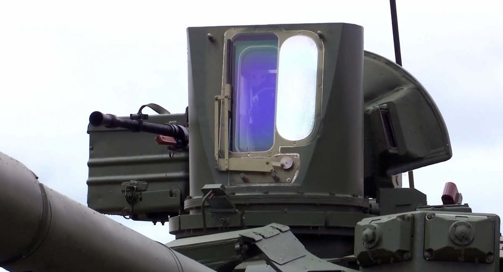

ДП "Миколаївський авіаремонтний завод "НАРП" (входить до складу ДК "Укроборонпром") днями здійснило передачу представникам Міноборони України одного з відновлених фронтових бомбардувальників Су-24М. Повідомляється, що всі пошкоджені агрегати планера літака були повністю замінені силами фахівців миколаївського підприємства.Нагадаємо, в останнє, з відкритих джерел, повідомлялося про передачу відремонтованого Су-24М (08 "білий") ще у 2019 році. Загалом же за роки війни було відновлено три таких бомбардувальники (цьогорічний став четвертим) та три розвідники Су-24МР (останній - бортовий номер 54 "жовтий", був переданий у грудні 2020 року).Варто також додати, що останнім часом військові частини Повітряних сил ЗС України, в яких на озброєнні стоять фронтові бомбардувальники, значно збільшили кількість польотів на цих машинах. Так, з початку квітня ц. р. було проведено щонайменше три тренування з бойової підготовки пілотів фронтових бомбардувальників (Су-24М) та розвідувальників (Су-24МР).
 ПАТ "Завод "Маяк" (входить до складу ДК "Укроборонпром") з 27 травня ц.р. починає практичну серію тестів оновленої версії радянського кулемета НСВТ, власного виробництва, з покращеними характеристиками влучності. Як повідомив Defense Express головний конструктор Заводу "Маяк" Олександр Гордєєв, український КТ-12,7 буде не лише спроектований за західними стандартами, а й матиме розроблену на підприємстві систему, котра дозволить значно покращити кучність та влучність стрільби цього кулемета. Нагадаємо, перші зразки КТ-12,7 (український аналог великокаліберного кулемета НСВТ) були представлені на початку 2021 року. На відміну від строго зразка, що виготовлявся в СРСР, модель виробництва Заводу "Маяк" створена за сучасними західними стандартами у партнерстві з компаніями Bartlein Barrels Inc. (США) – яка є виробником так званих "бланків" ствола та ARS Ballistics (Велика Британія), що займалась оснащенням для вгону його в прецизійну геометрію. Окрім танкової версії, яка, доречи, має бути надалі встановлена на оновлену версію танка БМ "Оплот", на ПАТ "Завод "Маяк" також працюють і над дефіцитним піхотним варіантом кулемету - КМ-12,7 (аналог радянського НСВ 12,7). Його випробовування (за планом також оснащеного спецмеханізмом для збільшення влучності) орієнтовно розпочнуться у серпні 2021 року. Паралельно будуть проходити й тести серійних версій кулемету КТ-7,62 (для бронетехніки) та КМ-7,62 (піхотний варіант) над покращенням влучності яких теж збираються попрацювати.Головний конструктор "Маяка" Олександр Гордєєв впевнений, що після необхідних випробувань запропоновані рішення дозволять зробити чи ненайкращі версії кулеметів такого калібру у світі за показниками влучності стрільби, до того ж будуть значно перевершувати аналоги за мінімізацією витрат боєкомплекту і як наслідок будуть мати більший ресурс використання.